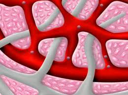

लसिका तन्त्र

इस लेख में मानव शरीर से संबंधित उल्लेख है। सभी कशेरूकियों में रुधिर परिसंचरण के अतिरिक्त लसिका परिसंचरण तंत्र पाया जाता है। तरल को लसिका कहते हैं।
अंग
लसिका तंत्र लसिका कोशिकाओं, लसिका वाहिनियों, लसिका गाँठों व लसिका अंगो से मिलकर बना होता है जो इस प्रकार है:-
लसिका केशिकाएँ
ये अत्यधिक कोमल व पतली दीवार की बनी नलियाँ होती हैं, जो उपास्थि, मस्तिष्क एवं मेरुरज्जु के अतिरिक्त अन्य सभी भागों में एक जाल-सा बनाए रहती हैं। इनकी अंतिम शाखाएँ दूरस्थ सिरों पर बन्द होती हैं। आँत्र के रसांकुरों में इनकी अंतिम शाखाएँ और आक्षीर वाहिनियाँ कहलाती हैं। आँत्र में अवशोषित इमल्सीकृत वसाओं के कारण इनकी लसीका दूधिया रंग का होता है जिसे चायल कहते हैं।
लसिका वाहिनियाँ
ये लसिका केशिकाओं से मिलकर बनी होती हैं। ये रचना में शिराओं के समान होती हैं। इनमें भी हृदय की ओर खुलने वाले एकतरफा कपाट होते हैं। लसिका वाहिनियाँ परस्पर मिलकर दो बड़ी लसिका वाहिनियाँ बनाती हैं।
बाई वक्षीय लसिका वाहिनी
इसमें सिर, ग्रीवा एवं वक्ष के बाएँ भागों, बाएँ अग्रपाद तथा दोनों पश्चपादों, आहारनाल एवं उदय गुहा के कुछ अन्य भागों की लसिका वाहिनियाँ खुलती हैं। यह वाहिनी उदय गुहा में स्थित सिस्टर्ना चाइलाई नामक एक बड़ी थैली से जुड़ी रहती है फिर आगे बढ़कर यह बाईं सबक्लेवियन शिरा में खुलती है।
दाहिनी वक्षीय लसिका वाहिनी
इसमें सिर, ग्रीवा व वक्ष के दाहिने भाग तथा दाहिनी अग्रभुजा (हाथ) की लसिका वाहिनियाँ खुलती हैं। यह बाईं लसिका वाहिनी की अपेक्षा छोटी होती है तथा दाहिनी सबक्लेवियन शिरा में खुलती हैं।
लसिका गाँठें
लसिका वाहिनियों पर स्थित फूले हुए भागों को लसिका गाँठें कहते हैं। प्रत्येक लसिका गाँठ लसिका ऊतक की बनी गोल या अण्डाकार रचना होती हैं। ये लिम्फोसाइट्स का निर्माण कर उनको लसिका में मुक्त करती हैं। ये लसिका को छानकर साफ़ करती हैं, एण्टीबॉडीज का संश्लेषण करती हैं तथा जीवाणुओं व अन्य हानिकारक पदार्थों का भक्षण करके उन्हें नष्ट करती हैं।
लसिका अंग
ये लसिका ऊतकों से बने होते हैं। लसिका पुटक, प्लीहा (तिल्ली), थाइमस ग्रंथि, टॉंसिल्स तथा लाल अस्थि मज्जा आदि लसिका अंग ही हैं।
कार्य
लसिका तंत्र के मुख्य कार्य निम्नलिखित हैं।
- रुधिर कोशिकाओं से प्लाज्मा तथा श्वेत रुधिर कणिकाएँ छनकर ऊतकों में पहुँच जाती हैं। यह छना हुआ तरल लसिका कहलाता है। लसिका तंत्र द्वारा यह तरल वापस रुधिर में पहुँचाया जाता है।
- लसिका अंगों व गाँठों में लिम्फोसाइट्स का परिपक्वन होता है।
- लसिका अंगों व लसिका गाँठों में एण्टीबॉडीज का निर्माण होता है। ये प्रतिरक्षा तंत्र का मुख्य भाग बनाती हैं।
- आँत्र में वसीय अम्ल तथा ग्लिसरॉल का अवशोषण आक्षीर वाहिनियों द्वारा होता है।